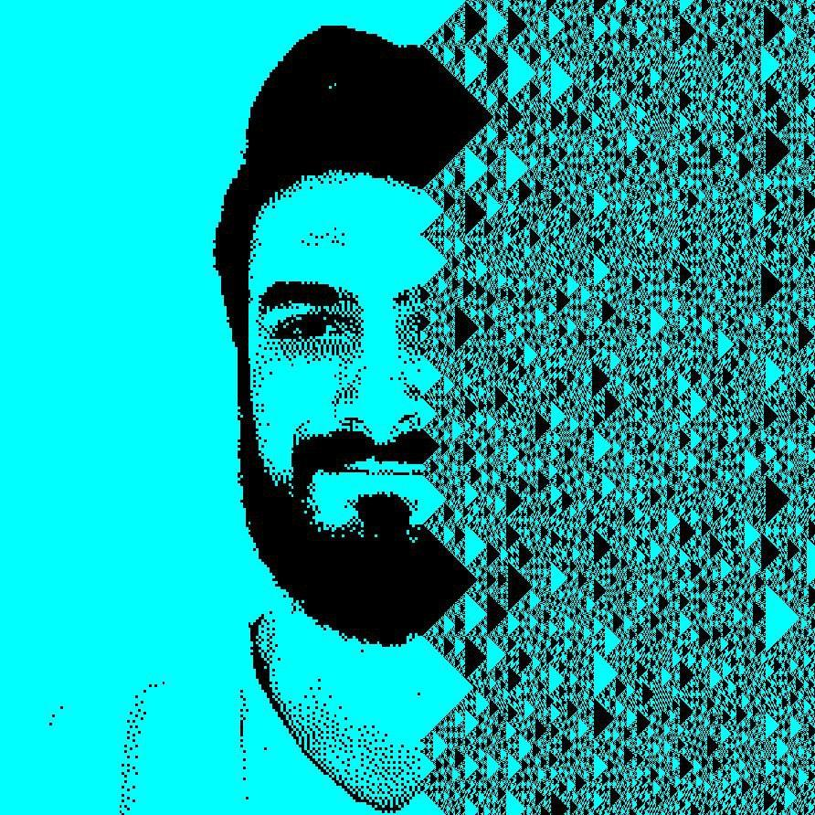

~/chaotic-systems/lorenz

postdoctoral researcher_
complexity · computation · learning
I am Francesco Martinuzzi, a postdoctoral researcher at the Max Planck Institute for the Physics of Complex Systems. In my research I use artificial intelligence to investigate chaotic dynamics. More broadly, I am interested in complexity, computation, and learning.
I work mostly at the intersection of scientific machine learning and nonlinear dynamics, trying to reduce models to the simplest components that still learn a dynamical regime, rather than making them bigger. I build and maintain open scientific software, much of it in the Julia ecosystem.